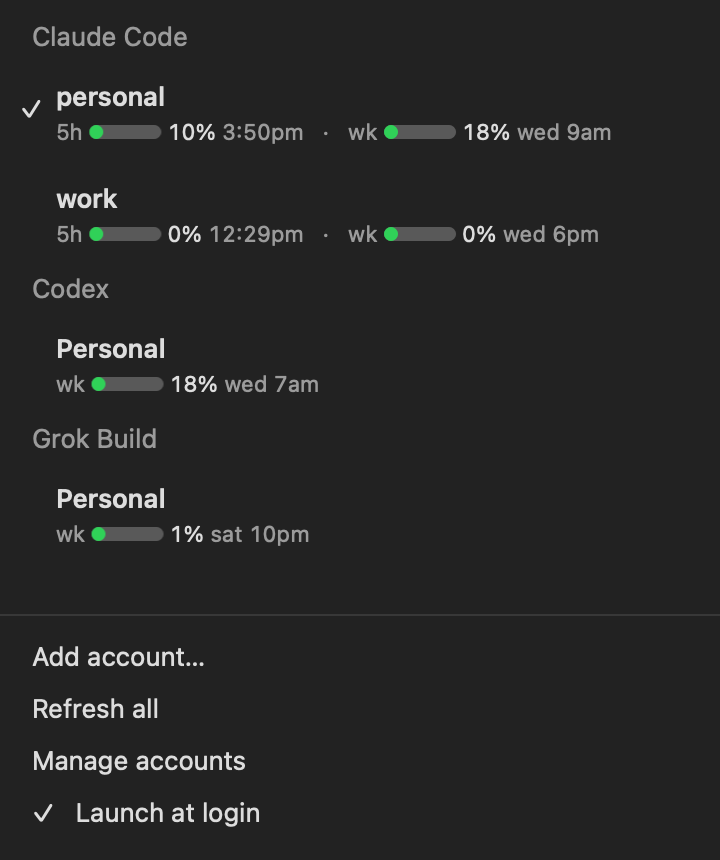

<!doctype html>
<html lang="en">
<meta charset="utf-8">
<title>Usage Bar project cover</title>
<style>
  * { box-sizing: border-box; }
  html, body { margin: 0; width: 1200px; height: 630px; overflow: hidden; }
  body {
    color: #171717;
    font-family: -apple-system, BlinkMacSystemFont, "SF Pro Display", "Helvetica Neue", sans-serif;
    background-color: #f7f4ed;
    background-image:
      linear-gradient(rgba(185,179,167,.28) 1px, transparent 1px),
      linear-gradient(90deg, rgba(185,179,167,.28) 1px, transparent 1px);
    background-size: 52px 52px;
  }
  main { position: relative; width: 100%; height: 100%; }
  .copy { position: absolute; left: 58px; top: 215px; }
  h1 { margin: 0; font-size: 74px; line-height: .9; letter-spacing: -4.5px; font-weight: 750; }
  .meter { display: inline-block; width: 34px; height: 10px; margin: 0 13px 13px 10px; border-radius: 999px; background: #32c966; }
  .subtitle { margin: 32px 0 0 2px; color: #57534d; font-size: 23px; line-height: 1.45; letter-spacing: -.25px; }
  .meta { display: flex; gap: 13px; align-items: center; margin: 35px 0 0 2px; color: #777169; font-size: 14px; font-weight: 650; }
  .dot { width: 4px; height: 4px; border-radius: 50%; background: #aaa399; }
  .menu {
    position: absolute; right: 45px; top: 28px; width: 448px; height: 574px;
    display: flex; align-items: center; justify-content: center;
    overflow: hidden; border-radius: 26px; background: #222223;
    box-shadow: 0 16px 36px rgba(37,35,31,.2);
  }
  .menu img { width: 440px; height: 566px; object-fit: contain; }
</style>
<main>
  <section class="copy">
    <h1>usage<span class="meter"></span>bar</h1>
    <p class="subtitle">Claude Code, Codex, and Grok usage.<br>One native Mac menu.</p>
    <div class="meta"><span>MACOS 13+</span><span class="dot"></span><span>LOCAL</span><span class="dot"></span><span>OPEN SOURCE</span></div>
  </section>
  <div class="menu"></div>
</main>
</html>
